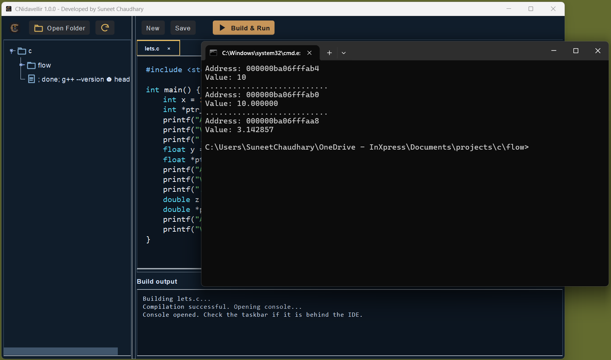

Set up
| Java | Java 21 or newer is required. The app is built for Java 21 and won't run on older versions. The launcher needs javaw.exe on your PATH, or Windows set up to open .jar files with Java. |
|---|---|
| GCC and GDB | Included. The ZIP contains a complete toolchain (w64devkit 2.11.0) in the mingw64 folder, with gcc.exe for C, g++.exe for C++ and gdb.exe for the debugger. You don't need to install anything else. |
| Launch | Double-click CNidavellir.exe, or run .\CNidavellir.exe from PowerShell in the extracted folder. |
- Install Java 21 or newer if you don't have it.
- Extract the entire ZIP into a folder of your choice. Keep
CNidavellir.exe,CNidavellir.jarand themingw64folder together, because Build & Run and Debug look for the compiler and debugger inmingw64next toCNidavellir.jar. - Start CNidavellir from that folder:
You can also start the app directly with Java:.\CNidavellir.exejava -jar CNidavellir.jar
If Java can't be found, the launcher shows: “Could not start CNidavellir. Install Java 21 or newer and keep CNidavellir.jar beside this launcher.”
On first launch, the window opens with a new, unsaved file called Untitled.c that contains a “Hello, World!” program. The explorer stays empty until you open a folder.
Upgrading from 1.0.0? Extract 2.0.0 into its own folder. It reopens the folder and file you last had open in 1.0.0, because both versions store that information in the same place.
The window
The window title shows the version: CNidavellir 2.0.0. The window has six areas. You can drag the dividers between them to resize.
* when it has unsaved changes. Click × to close the file.Open a folder
- Click Open Folder and choose a folder. The picker only lets you select folders.
- The folder appears at the top of the tree, already expanded. Click the arrow next to a subfolder to expand it. Its contents load when you expand it, and you may briefly see “Loading...”.
- Click a
.c,.cppor.hfile once to open it in the editor.
- The tree shows every file and folder, including
.exefiles. Folders are listed first, then files, each in alphabetical order (not case-sensitive). - Clicking any other kind of file does nothing. Clicking the file that's already open does nothing either.
- The tree refreshes when you click ↻, when you switch back to the CNidavellir window, and after every successful Build & Run, so a new
.exeappears without extra steps. Refreshing keeps your expanded folders and selection. - If a folder can't be read, CNidavellir shows “Could not list folder:” followed by the reason.
Create, open and close files
CNidavellir edits one file at a time. Opening or creating a file replaces the current one in the editor.
Supported file types
| Type | Open and edit | Build & Run | Debug |
|---|---|---|---|
.c | Yes | Yes, with gcc using the C17 standard | Yes |
.cpp | Yes | Yes, with g++ using the C++17 standard | No |
.h | Yes | No | No |
Extensions are matched regardless of case, so MAIN.C works too. Files are read and saved as UTF-8.
Create a new file
- Click New. The editor shows
Untitled.cwith a starter program:#include <stdio.h> int main(void) { printf("Hello, World!\n"); return 0; } - Write your code, then click Save to choose a name and location (see Save).
Close a file
Click × on the file tab. With no file open, the editor is blank and read-only, and Save, Build & Run and Debug are unavailable. Click a file in the explorer or click New to continue.
Unsaved changes
If the current file has unsaved changes and you open another file, click New, close the tab, delete the open file, or close the window, CNidavellir asks “Save changes to …?”:
- Yes saves the file, then continues.
- No discards your changes, then continues.
- Cancel stops, leaving everything as it was.
Edit code
- Line numbers: every line is numbered in the column to the left of the code. Clicking a number sets a breakpoint (see Debug a program).
- Font: code uses Consolas, or Java's standard monospaced font if Consolas isn't installed.
- Auto-indent: pressing Enter starts the new line with the same spaces and tabs as the current line.
- Tabs: Tab inserts a tab character, displayed four columns wide.
- Undo and redo: Ctrl+Z undoes and Ctrl+Y redoes. Undo history is cleared when you open another file or click New. Saving keeps it.
- Unsaved marker: any edit adds
*after the name on the file tab until you save.
C syntax highlighting
The editor colours your code as you type:
| Colour | What gets it |
|---|---|
| Purple | Keywords: return if else while for do switch case break continue default goto sizeof typedef struct union enum static const extern volatile inline restrict auto register signed unsigned |
| Cyan | Types: int char void short long float double bool _Bool size_t wchar_t |
| Green | String literals ("…") and character literals ('…'), including escapes such as \n |
| Orange | Numbers, such as 10, 3.14 and 0xFF |
| Blue | Preprocessor lines: any line whose first non-space character is # |
| Grey | Comments: // … to the end of the line, and /* … */ |
.cpp files are coloured with the same C rules.
Autocomplete New
As you type, CNidavellir suggests names you can insert.
When suggestions appear
- Automatically when you've typed at least two characters of a name (letters, digits or
_) and pause briefly. - On request with Ctrl+Space, even after just one character or none.
- Never inside comments or strings.
Using the list
| Keys | Action |
|---|---|
| ↑ / ↓ | Move through the suggestions |
| Enter or Tab | Insert the selected suggestion |
| Double-click | Insert the clicked suggestion |
| Esc | Close the list |
Inserting replaces what you typed with the full name. Only the name is inserted, without brackets or arguments, and a single Ctrl+Z undoes it. When the list isn't showing, Enter, Tab, ↑ and ↓ work as usual.
What it suggests
Suggestions match the start of the name, and matching is case-sensitive. Your own names are listed first, then keywords, each in alphabetical order, up to 20 at a time. Each suggestion shows its kind, or the header it comes from.
| Shown as | Suggested when |
|---|---|
| Variable | It's declared above the cursor and the cursor is still inside the same { } block. Function parameters count as variables inside their function. |
| Function | It's declared or defined anywhere above the cursor. |
<stdio.h>, <stdlib.h>, <string.h> | The file includes that header with #include <…> above the cursor. See the function list below. |
| Keyword | Always available. Covers the C keywords and basic types, from auto to while, plus _Bool. |
| Header | Functions suggested |
|---|---|
stdio.h | printf scanf puts fgets fprintf snprintf |
stdlib.h | malloc calloc realloc free qsort |
string.h | strlen strcmp memcpy memmove memset |
Your variables and functions are recognised when they're declared with int, char, void, float, double, long, short, _Bool or a struct type, optionally with const, static, signed or unsigned in front. Declarations inside comments are ignored.
Save
Click Save. There's no keyboard shortcut for saving.
- A file that's already saved: CNidavellir writes the editor's contents back to the same file, and the
*on the tab disappears. If you haven't changed anything and the file on disk hasn't changed, nothing is written. - A new file (
Untitled.c): a Save dialog opens. It starts in the folder CNidavellir was launched from, not the folder in the explorer, so browse to your project folder first.- CNidavellir adds
.cto any name that doesn't already end in.c. For example,hellois saved ashello.c. - If the file already exists, you're asked “Overwrite …?”. Choose No to cancel the save.
- CNidavellir adds
- If saving fails, CNidavellir shows “Could not save file:” followed by the reason.
Build & Run and Debug both save automatically before they compile.
Build & Run

Click Build & Run with a .c or .cpp file open, or a new unsaved file. It's unavailable when a .h file is open, when no file is open, and while a build is in progress.
- Save. The file is saved first. For a new file, the Save dialog opens. If you cancel it, nothing is built.
- Compile. Build output shows
Building <file>..., and the compiler runs in the file's folder. Its warnings and errors appear in Build output line by line. - Run. If compilation succeeds, Build output shows
Compilation successful. Opening console..., the explorer refreshes, and the program starts in a new console window (see How your program is launched).
The compiler command
| Open file | Command CNidavellir runs |
|---|---|
lets.c | gcc.exe -Wall -Wextra -std=c17 lets.c -o lets.exe |
lets.cpp | g++.exe -Wall -Wextra -std=c++17 lets.cpp -o lets.exe |
- The program is saved as an
.exewith the same name, in the same folder as the source file, replacing any earlier build. -Wall -Wextraturns on extra warnings. Warnings appear in Build output but don't stop the build. Only errors do.- Only the open file is compiled. Other source files in the folder are not compiled or linked.
- CNidavellir looks for the compiler in
mingw64\binnext toCNidavellir.jar, then next toCNidavellir.jaritself, then on yourPATH. If it can't find one, it reports:gcc.exe was not found. Place a complete mingw64 toolchain beside the JAR, or add it to PATH.For.cppfiles, the message namesg++.exe.
Build output messages
| Message | Meaning |
|---|---|
Building lets.c... | Compilation has started. |
Compilation successful. Opening console... | The .exe was built and is about to run. |
Console opened. Check the taskbar if it is behind the IDE. | The program's console window was started. It may open behind CNidavellir. |
Compilation failed (exit code N). | The compiler reported errors. The program is not run. |
Source unchanged; running the already built lets.exe. | Nothing changed since the last build, so the existing .exe runs without recompiling. |
Could not start … or Build failed: … | The compiler was found but couldn't be started, or the build hit an unexpected error. |
Could not open program console: … | The program built, but its console window couldn't be opened. |
When a build fails
- Build output lists the compiler's error messages, which include line numbers, followed by
Compilation failed (exit code N).Use the line numbers beside the editor to find each line. - The program is not run, and no console window opens.
- Fix the errors and click Build & Run again. After a failed build, the next Build & Run always recompiles.
Running without recompiling
If you click Build & Run again and nothing has changed, CNidavellir runs the existing .exe straight away and shows Source unchanged; running the already built <name>.exe. This happens only when all of the following are true:
- It's the same file that was last built successfully in this session.
- The editor's text is exactly the same as when it was built.
- The
.exestill exists. - The file has no local includes, meaning no line like
#include "myheader.h".
Files with a quoted #include "…" are always recompiled, because CNidavellir can't tell whether the header changed. Angle-bracket includes such as #include <stdio.h> don't count.
CNidavellir only remembers the last build until you close it. The first Build & Run after starting the app always compiles. Debug always compiles too.
How your program is launched
CNidavellir uses a hidden Windows PowerShell command to open a new Command Prompt window, which runs your program like this:
cmd.exe /k ".\lets.exe"- The program runs in the source file's folder, so relative file paths in your code start there.
- Its output appears in that console window, not in Build output. If the program reads input (for example with
scanf), type it in the console. - Because of
/k, the window stays open at a command prompt after the program ends, so you can read the output. Close it when you're done. - Each Build & Run opens a new console window. If you don't see it, check the taskbar, as it may be behind CNidavellir.
Debug a program New
CNidavellir can pause a C program at chosen lines so you can step through it and look at its variables. It uses GDB, which is included in the ZIP. Debugging works with .c files and new unsaved files (which are saved as .c). It isn't available for .cpp or .h files.
The Debugger panel is on the right when CNidavellir starts. Click Debugger in the toolbar to hide or show it.
Start debugging
- Set breakpoints. Click a line number to put a breakpoint on that line, and click it again to remove it. You can add or remove breakpoints before or during a debug session.
- Click Debug at the top of the Debugger panel. CNidavellir saves the file, builds a debug version of the program, and starts GDB. Build output shows
Building debug executable..., thenGDB started. Program input opens in a separate Windows console. - Interact with the program. It runs in its own console window. If it reads input, type it there.
- Inspect it when it pauses. When the program reaches a breakpoint, the editor highlights that line and moves the cursor to it. The panel shows
Paused at lets.c:12(with your file and line), and the tabs fill with the program's current state. - Step or continue with the buttons below, or click Stop to end the session.
Debugger buttons
Hover over a button to see its tooltip.
| Button | What it does |
|---|---|
| Debug | Builds with debug symbols and starts GDB. Clicking it during a session rebuilds and starts a fresh session. |
| ▶ Continue | Continues running until the next breakpoint or the end of the program. |
| ↷ Step Over | Runs the current line without entering function calls. |
| ↘ Step Into | Runs the current line and enters a function call. |
| ↗ Step Out | Runs until the current function returns. |
| ■ Stop | Ends debugging and closes the program. |
Continue and the step buttons only work while the program is paused. Below the buttons, the status line shows No debug session, Running or Paused at <file>:<line>.
Variables, Call Stack and Watches
These tabs update every time the program pauses.
- Variables lists the local variables and arguments of the selected function as
name = value. Double-click a variable to add its dereferenced value (*name = …), which is useful for pointers. GDB shows values for simple types only here, so arrays and structs may appear without a value. Add them as watches to see their contents. - Call Stack lists the active function calls, innermost first, as
level function : line. Click a call to see the variables and watches for that function. - Watches evaluates expressions you choose. Type an expression such as
x * 2orarr[3]in the box and press Enter. Each watch showsexpression = value, or GDB's error message if it can't be evaluated.
How the debug build works
| Open file | Command CNidavellir runs |
|---|---|
lets.c | gcc.exe -g -O0 -Wall -Wextra -std=c17 lets.c -o lets-debug.exe |
-gadds debug information and-O0turns off optimisation, so the program follows your code line by line.- The debug program is saved as
<name>-debug.exenext to the source file, so it never replaces the<name>.exemade by Build & Run. - Debug always recompiles, even if nothing changed.
- CNidavellir looks for
gdb.exein the same places as the compiler (mingw64\binbesideCNidavellir.jar, beside the JAR, or on yourPATH), and also in the folder where it foundgcc.exe. - Opening another file, clicking New or closing the tab ends any debug session and clears all breakpoints.
Debug messages in Build output
| Message | Meaning |
|---|---|
Building debug executable... | The debug build has started. Compiler warnings and errors follow. |
Debug build failed. | The compiler reported errors. The debugger doesn't start. |
GDB started. Program input opens in a separate Windows console. | The debug session is running. |
Breakpoint N: … | GDB couldn't set the breakpoint on line N. The rest of the message gives GDB's reason. |
GDB: … | GDB reported an error for a run, continue or step command. |
Program exited. | The program finished, and the session ends. |
Debug session ended. | GDB closed by itself. |
gdb.exe was not found or could not start. Install GDB beside GCC or add it to PATH. | GDB is missing. Check that the mingw64 folder is complete. |
Could not start GCC: … | The compiler couldn't be started for the debug build. |
GDB's own status messages also appear in Build output during a session.
Delete files and folders
- In the explorer, select a file or folder and press Delete, or right-click it and choose Delete.
- Confirm with Yes when asked “Delete …?”.
Deleting is permanent. Items are not moved to the Recycle Bin.
- Only empty folders can be deleted. Deleting a folder that isn't empty fails with “Could not delete …”.
- The folder at the top of the tree can't be deleted from CNidavellir.
- If you delete the open file, CNidavellir first asks about any unsaved changes, then closes the tab.
What CNidavellir remembers
When you close the window (after the unsaved-changes prompt, if any), CNidavellir saves your session for your Windows user account:
- The folder open in the explorer.
- The file open in the editor.
- Whether a file was open at all.
On the next launch, it reopens that folder and file, if they still exist and the file is a .c, .cpp or .h file. If you had closed the tab, it starts with no file open. If you were working on an unsaved new file, it starts with a fresh Untitled.c. If the last file can't be read, Build output shows “Could not restore the last file:” followed by the reason.
Breakpoints, watch expressions and whether the Debugger panel was hidden are not remembered.
Keyboard shortcuts
| Keys | Where | Action |
|---|---|---|
| Ctrl+Space | Editor | Show autocomplete suggestions |
| ↑ / ↓ | Suggestion list | Move through suggestions |
| Enter or Tab | Suggestion list | Insert the selected suggestion |
| Esc | Suggestion list | Close the list |
| Ctrl+Z | Editor | Undo |
| Ctrl+Y | Editor | Redo |
| Enter | Editor | New line with the same indentation |
| Tab | Editor | Insert a tab, shown four columns wide |
| Ctrl+C / X / V / A | Editor | Copy, cut, paste and select all (standard Java text editing) |
| Enter | Watches box | Add the typed expression as a watch |
| Delete | Explorer | Delete the selected item (asks first) |
New, Save, Open Folder, Build & Run, Debug and the step commands have no keyboard shortcuts. Use the buttons.
Known limitations
- One file at a time. There's a single file tab, so opening a file replaces the current one.
- Single-file programs only. Build & Run and Debug compile just the open file with fixed options. Multi-file projects, extra libraries and custom compiler flags aren't supported.
- Debugging is C-only.
.cppfiles can be built and run, but not debugged. - Breakpoints stay on fixed line numbers. They don't move when you add or remove lines above them, and they're all cleared when you open another file, click New or close the tab.
- Watches can't be removed. Once added, a watch expression stays until you close CNidavellir.
- Autocomplete knows a limited set of names. It suggests C keywords, your own names declared with built-in or
structtypes, and 16 library functions from three headers. Names declared with other types, such assize_t,boolor your owntypedefs, aren't suggested, and neither are C++ names. - New files are always
.c. Saving a new file adds.cto any name that doesn't end in.c, somain.cppbecomesmain.cpp.c. To work on a.cppor.hfile, create it outside CNidavellir and open it from the explorer. - The Save dialog starts in the wrong place. For new files it opens in the folder CNidavellir was launched from, not the folder in the explorer.
- Only
.c,.cppand.hfiles open. Other extensions, including.hpp,.ccand.txt, can't be opened. - C-only highlighting.
.cppfiles are coloured with C rules, so C++ words likeclass,namespace,templateandnullptraren't highlighted. Neither aretrue,falseorNULL. - No reload when the file changes on disk. If another program edits the open file, the editor keeps its own copy, and the next Save, Build & Run or Debug writes over those outside changes.
- Limited file management. The explorer can't create, rename or move files or folders. Delete is permanent, and folders must be empty first.
- No search or menus. There's no find or replace and no menu bar. Compiler errors in Build output can't be clicked to jump to the line.
- No stop button for Build & Run. A program started with Build & Run can only be stopped from its own console window, for example by closing it. Debug sessions have their own Stop button.
- The skip-recompile check only lasts one session. The first Build & Run after you start CNidavellir always compiles.
Older versions
Older releases stay available. Each has its own guide describing what that version can do.
-
1.0.0Built 26 Nov 2026
Folder explorer, C syntax highlighting, undo and redo, auto-indent, and Build & Run with the bundled GCC. No debugger, autocomplete or line numbers.